來架網站吧！！
我的架站經驗談～
大致上要做的事...
生出網站之前...
你的網站是...
我要做什麼主題？
什麼方向？
大概要放什麼內容？
還是什麼服務？
可以使用現成的CMS
Drupal
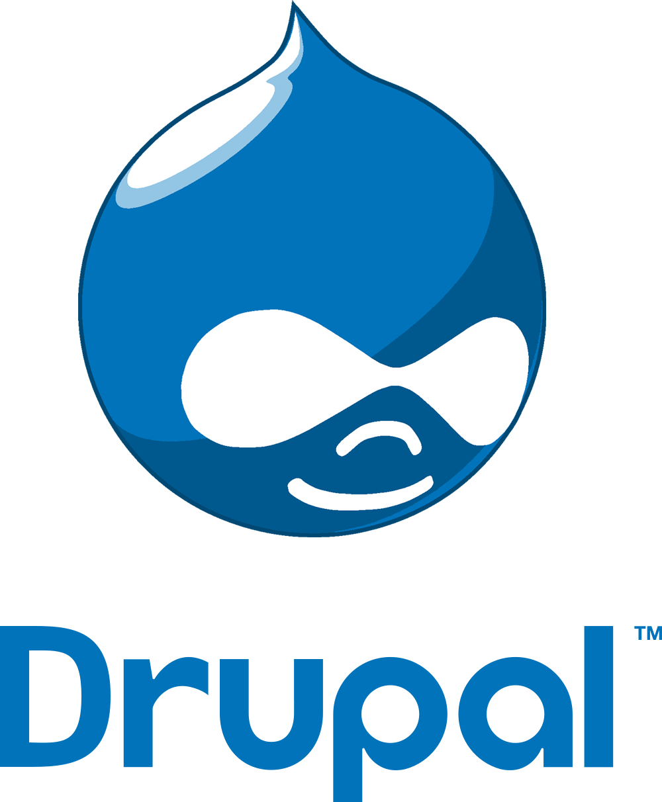自由度特高、擴充性特強
每個模組都拆得很開
與其他CMS相比，上手門檻較高
因為太自由，剛開始是什麼都沒有，很多都要自己DIY搭配
WordPress
架設部落格專用的首選！！
我目前的部落格就採用此系統
有一堆現成的精緻版型
可透過模組架電子商務網站
Joomla
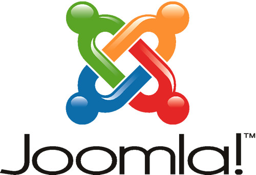可快速架設網站
（討論區、投票、部落格、相簿、電子商務）
目前有許多精緻版型
適合做公司形象網站
XOOPS
可快速架設網站
（討論區、投票、部落格、相簿、電子商務）
適合做通用型的網站
以上全部都是開放原始碼！！
可根據需求，自行寫這套CMS的外掛擴充
如果自己也想自幹一個出來
還是有現成資源可以用
後端動態資料
- CodeIgniter (PHP Framework
前端網頁界面
- Bootstrap (Front-End Framework
- Font-Awesome (Icon Framework
- Foundation (Front-End Framework
前端網頁注意
不要再用舊式寫法啦～與網頁外觀相關的請用CSS
<font>,<b>,<i>,<u>,<body bgcolor=””>......已經在HTML5標準中剔除了！- 也請用CSS排版，不要再用表格排版
HTML是內容，請合乎語意！
<strong>(強調),<blockquote>(段落引用),<abbr>(縮寫),<article>(文章),<footer>(頁尾)...麻煩請標注一下這個網頁的編碼
<meta charset="utf-8" />
除了會影響維護容易性以外，也會影響搜尋引擎(Google)檢索
後端網頁注意
資料庫內的密碼請加密，不要用明文存
不然如果被駭客入侵，會死得很難看～
絕對不要直接傳指令
ex. http://localhost/index.php?cmd=rm%20-rf%20%2f
會攸關這個網站安全程度如何（尤其是電子商務和金錢相關的更要小心）
放在網頁空間常遇到的狀況
資料庫伺服器位址要另外指定（非localhost）
資料庫名稱，很可能前面一定要有你的帳號
如果是自幹系統出來的話，資料庫連接語法不能寫死啊～
範例: 採用PDO -不要寫死！！
db_config.php:
<?php
$DB_SERV = "localhost"; // 資料庫伺服器名稱
$DB_USER = "yuan"; // 資料庫使用者名稱
$DB_PASS = "passwd"; // 資料庫使用者密碼
$DB_NAME = "my_db"; // 指定要使用哪個資料庫
$FORM_PREFIX = "uj_"; // 資料表的前綴字元connect.php:
<?php
require_once("db_config.php"); // 讀取連結資料庫資訊
// 連接資料庫
$db_connect = new PDO("mysql:dbname={$DB_NAME};host:{$DB_SERV};charset=utf8", $DB_USER, $DB_PASS);
// 查詢uj_users表格
$result = $db_connect->query("SELECT * FROM ".$FORM_PREFIX."users");範例: 採用傳統寫法 -不要寫死！！
db_config.php:
<?php
$DB_SERV = "localhost"; // 資料庫伺服器名稱
$DB_USER = "yuan"; // 資料庫使用者名稱
$DB_PASS = "passwd"; // 資料庫使用者密碼
$DB_NAME = "my_db"; // 指定要使用哪個資料庫
$FORM_PREFIX = "uj_"; // 資料表的前綴字元connect.php:
<?php
require_once("db_config.php"); //讀取連結資料庫資訊
// 連接資料庫
$db = mysql_connect($DB_SERV,$DB_USER,$DB_PASS) or die(mysql_error());
// 指定這個資料庫
mysql_select_db($DB_NAME,$db);
// 查詢uj_users表格
$db_table = mysql_query("SELECT * FROM ".$FORM_PREFIX."users") or die(mysql_error());有了內容，但...
空間呢？？
自己準備空間出來
機器要24hr開機且連上網路
至於設備...
- 直接拿電腦當伺服器
- 購買NAS檔案伺服器
- 可愛的樹莓派（流量小）
- 對你的分享器”刷機” ...嘿嘿嘿
直接拿電腦當伺服器
我個人喜歡的配置
- OS: Linux Debian / Linux CentOS
- 網頁伺服器: Apache / Nginx
- FTP: vsftpd
- 遠端連線: OpenSSL, VNCServer
直接拿電腦當伺服器 - Windows
我朋友的伺服器
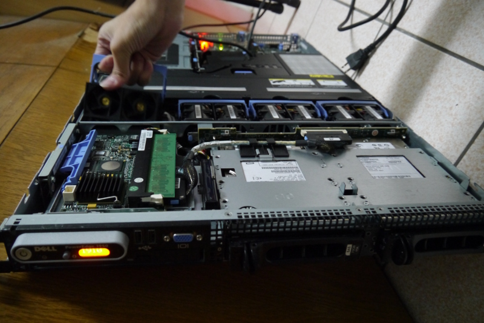可愛的樹莓派
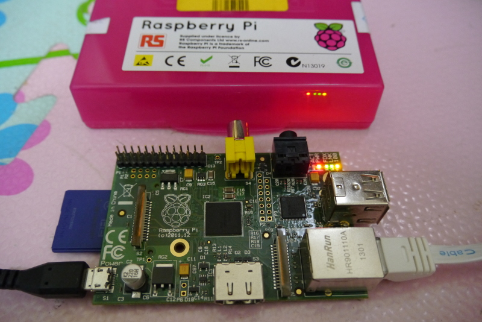價錢:
- 單機板: A型 $25美元，B型$35美元（建議買B型）
- 臺灣官方組合價2330元/組: ModelB + 16G SD卡 + 電源組
流量小 <-這點很重要
- Raspberry Pi台灣樹莓派官網
對你的分享器”刷機”
如果你的分享器有外接USB隨身碟的功能的話，可以靠刷機，當場變成伺服器
知名的第三方ROM
警告！刷機有風險，有可能導致分享器報銷，請確定了解自己再做什麼以後再下手
別忘了，網路嘿啊...
網路連線速度要夠快
必需要有對外IP
什麼是對外IP？可參考重灌狂人的外部電腦要用什麼IP才能連到我的電腦？
- 固定IP: 那最好也是最簡單啦～那只要把網址對到這個IP即可
- 浮動IP: 請使用動態IP對應的服務
你的電腦本身是不是外部IP
可用此方法檢查:
- 打開終端機（命令提示字元）輸入:
ifconfig
（Windows 則輸入:ipconfig） - 到我的IP是多少？來比對是否一樣
如果你的電腦不是外部IP
請對你的分享器設定
如果你是用社區網路、外面租屋（每戶共用一組IP上網）
只能找社區的網管幫你開某對外的Port，否則無解～
浮動的對外IP
如果你每一次連線時得到的IP不一樣
可使用提供動態DNS對應服務:
設定浮動的對外IP
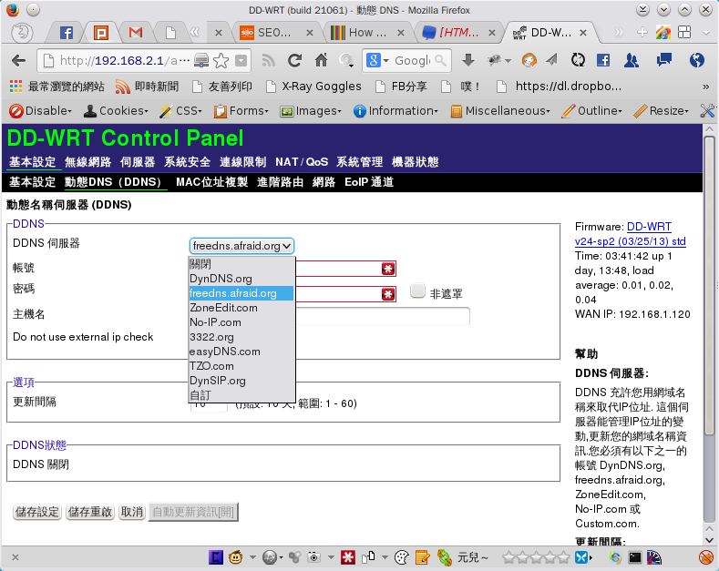下載這個服務給你的軟體
當你重新連線後，程式會自動抓你目前的IP，並把網址重新對應上。
使用分享器提供的功能
方式如上述，只不過是對分享器設定，不是電腦。
要我自己準備設備，我沒那麼多錢啊～
那我要怎麼挑選網頁空間？？
網頁空間的挑選
存放網站的檔案容量要足夠
可讓親愛的客人來訪的流量多少
要能自己另外綁網址
上傳方式（FTP or Git）
存放網站的檔案容量要足夠
一般來說500MB的容量應該就很夠了
除非是圖片、影片很多...
如果有大量圖片or影片的話，建議另外找空間存放
為何要能自己另外綁網址
嗯...這問題
上傳方式
一般來說都是用FTP上傳的
但也有採用Git push上傳的
Git是什麼？版本控制系統... 詳細可點這參考:P
絕對不要挑到”只能透過管理網頁界面上傳”的空間
網頁空間的挑選 #2
- 如果是動態網站: 要能跑PHP+MySQL (MariaDB)
- 管理界面是否得心應手
其他方面
- 是否支援.htaccess
- 是否可自訂404錯誤 (笑
- 可以開幾個資料庫
- FTP帳號可開多少個
- 有沒有提供Email
CPanel

VistaPanel

是否支援.htaccess
我在什麼時後會用到？
控制是否要讓觀眾看到資料夾有哪些檔案
讓網址更漂亮一點
控制誰可以看你的網站（阻擋部份IP）
自訂錯誤頁面（404, 403, 500 ...）
不知道錯誤代碼是什麼？讓貓咪來帶你認識HTTP錯誤代碼
網址轉址（我最近用於改網址的舊網址轉址）
線上製作.htaccess - .htaccess Editor
自訂404和其他錯誤頁面
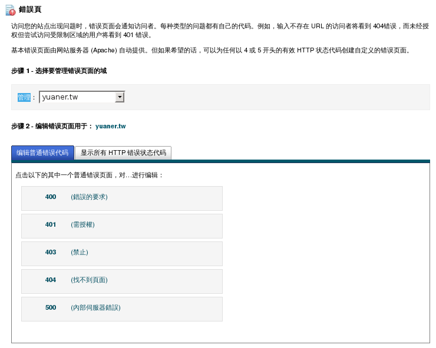來～讓我們好好的欣賞404吧～
有沒有提供Email
通常什麼時後會用到？？
- 顧客向你註冊帳號時，要寄給他電子信箱驗證信
- 通知顧客已成功訂購、出貨
定時寄送廣告郵件←做人不要這樣嘛～
就算沒提供，是否支援用外部SMTP...其他方式寄送？？
不過...挑選空間更重要的...
請打聽評價是否夠穩...
VPS?? 能吃嗎？
- 虛擬主機: 同臺主機內不同網站"共用"同資源(CPU, RAM......)
- VPS: 類似虛擬電腦的概念，給你一個獨立的系統，完全由你DIY
當然價格也比虛擬主機高一點
推薦免費的網頁空間
初心者站長論壇
000webhost
獅子的免費虛擬主機
雖然lionfree.tk那邊也能註冊，但不建議，因為最近我朋友有災情～
hyperphp
既然有免費的，幹嘛還要用付費的
付費...就是有保障
可用空間變大、可允許流量變大、可建立更多個資料庫、可綁定多個網址.....
- 重點是...
因為是付費，所以空間不能隨便掛點
因為是付費，資料不能隨便消失、砍帳號
可以考慮的付費空間
我想測試我挑的空間如何？
使用phpinfo函式來查詢資訊
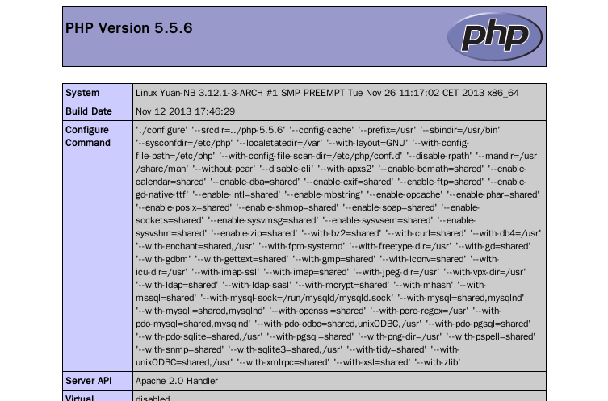phpinfo.php:
<?php
phpinfo();使用PHP探針
有空間了
那別人要怎麼連進來？？
網址就是你家門牌
搜尋引擎檢索的標準
請另外綁網址，盡量不要使用網站空間附給你的網址
日後網站搬家時，只要重新調整網址對應即可，不需重新給別人新網址
千萬千萬...不要直接給人家IP啦～
那這網址............
啥鬼！？？？？？？
可以用WHOIS查詢
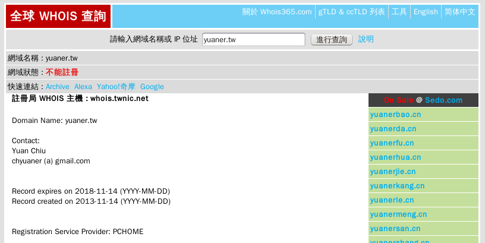http://www.whois365.com/tw/
頂級域名？二級域名？
頂級域名
- *.com
- *.net
- *.tw
- *.cc
二級域名
- *.twbbs.org
- *.twgg.org
- *.cu.cc
- *.no-ip.org
免費網域推薦 twbbs.org
是與PTT那票人合作的
期限是一年
不過快到期前可免費續用
申請需要一個禮拜的審核時間
其他免費網域推薦
不過據說因為太容易取得而造成濫用，已被Google封殺，不檢索進搜尋裡
以上都是二級網域
但我還是想要有自己的專屬網址
取得頂級域名...付費吧～～～
網域.後面字大不同
通用頂級域名
.com .org .net .info .gov .edu
國家頂級域名
.tw .cc .in .jp
不過現在越來越模糊了
簡單來說就是...你喜歡就好
- .cc 原是澳洲海外領地科科斯群島國家及地區，台灣無名小站就用這
- .tv 原是圖瓦魯國家及地區，不過有影音網站喜歡用
- .im原是英國海外屬地萌島國家及地區，不過有即時通軟體的官網網址就用
價錢大不同
- .tw 一年800元
- .idv.tw 一年400元
- .com 一年10美金 (約NT$300)
- .org 一年11美金 (約NT$330)
- .in 一年9美金 (約NT$270)
- .io 一年99美金 (約NT$2970)
- .cc 一年35美金 (約NT$1050)
國內
通用
他國
以上為粗略估計，每家域名提供商的價錢不一樣 (範例中的台幣美金換算是*30估算的)
推薦店家
購買域名注意
請注意域名是否合法？？
雖然現在名稱有模糊化，但部份名稱還是有規定在。
申請容易，但不合規定被抓到的話，隨時會被收回。
如果要購買臺灣的域名，請向臺灣提供商購買
雖然國外也有賣.tw域名，但會貴很多很多
相反的，如果要買國際/通用域名，請向國外購買
請注意價錢是第一年？還是以後都是？
有好幾家標榜價錢低廉，但到第二年價差就差非常多
好域名就趕快搶吧～先搶先贏！！
老實說...我最近趁特價的時候，就敗了～
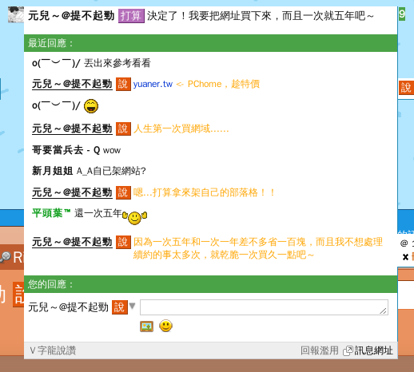有了域名以後，你就是這域名的主人！！
有了域名以後，你可以...
- http://yuaner.tw
- http://blog.yuaner.tw
- http://img.yuaner.tw
- http://album.yuaner.tw
- ftp://ftp.yuaner.tw
- me@yuaner.tw
DNS Server
你可以自行架設DNS Server
適合需要大量子網域、主機......
不過...一樣要24hr開著，而且技術方面完全由你負責
用外面的服務託管
成本低，較容易上手，適合初學者。
免費提供DNS代管服務
設定好你的子網域吧～
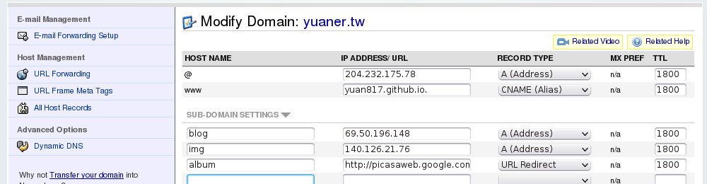DNS設定好後可能需要花一兩天的時間對應上
這樣你的網站就大致上成型了～
隨著網站的完成
甚至是開張
你可能會需要...
另外如果網站哪天突然掛掉了...
會希望能在"第一時間"通知你吧～
StatusCake -監控你的網站
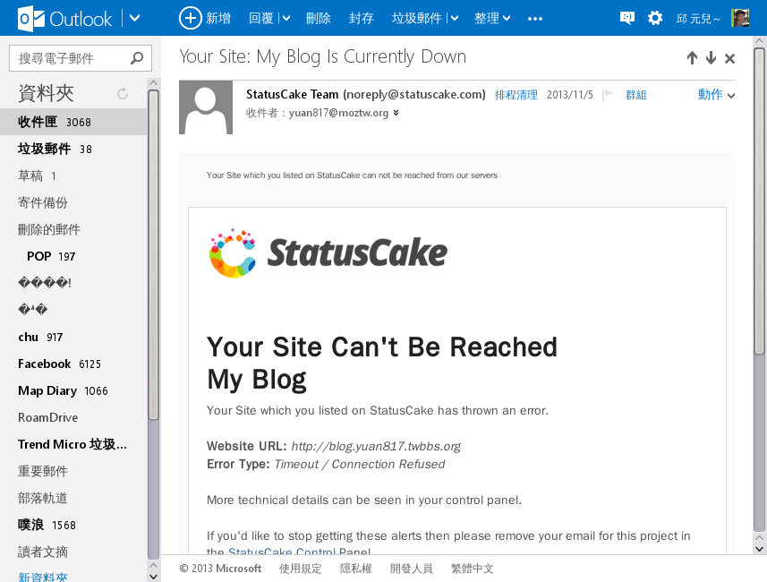Host Tracker
如果自己的主機都沒有當機，還可以向 Host Tracker 拿 uptime 貼紙放在網頁上炫耀一下。
進入你的網站要花多久時間？
可以使用網站效能分析工具
pingdom TOOLS
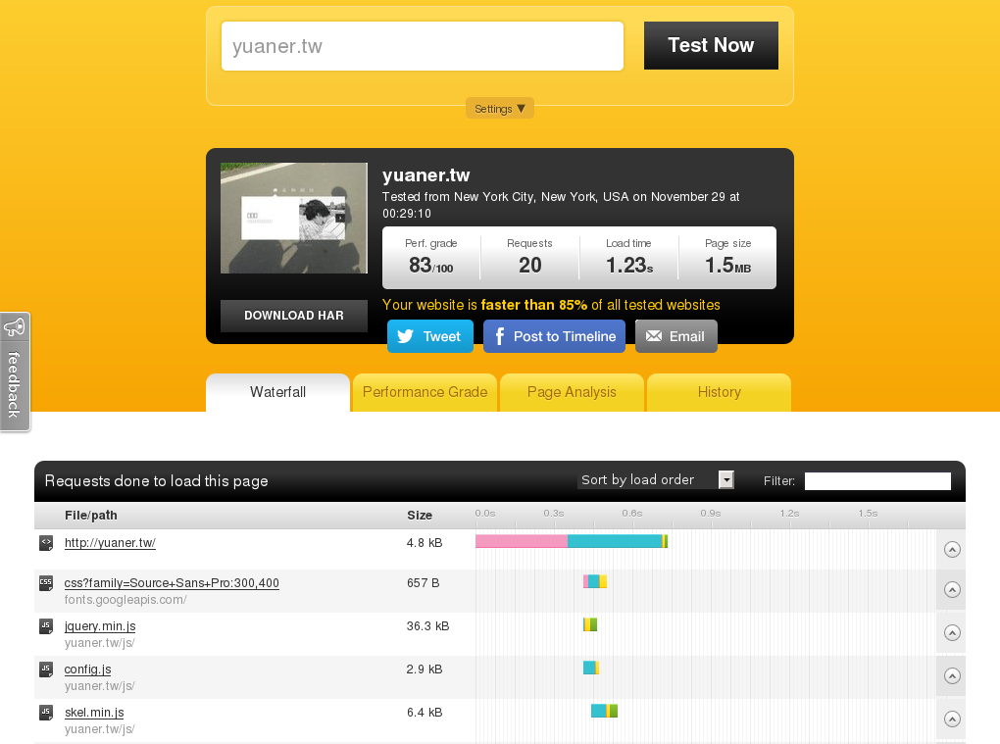GTmetrix
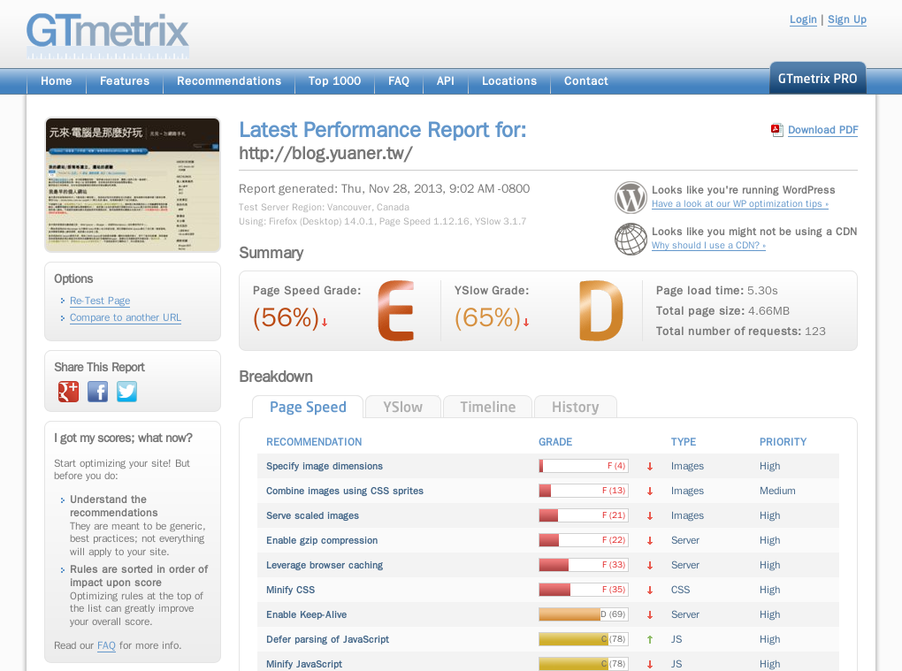想了解你的網站能承受多少人來訪啊？
Load Impact -給網站做壓力測試
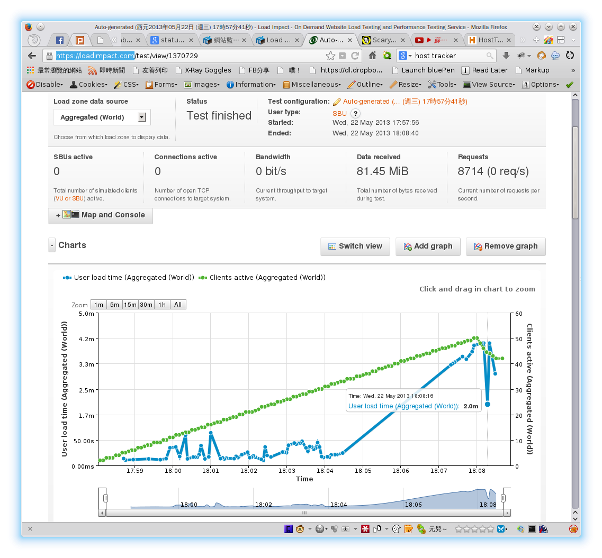我忘記最多能做多少連線數測試，印象中我的伺服器差不多在50人以上同時連線就差不多炸掉了 QQ
想了解你的網站的流量狀況
流量分析工具
Google Analytics
- 若使用Wordpress架站，可搭配Google Analytics
StatCounter
- 若使用Wordpress架站，可搭配StatCounter - Free Real Time Visitor Stats>
FC2計數器
非常可愛的計數器...
Yahoo 站長工具（已倒閉...哭哭）
如果不想讓網站的主人知道我是從哪來？
Firefox 設定不要追蹤我
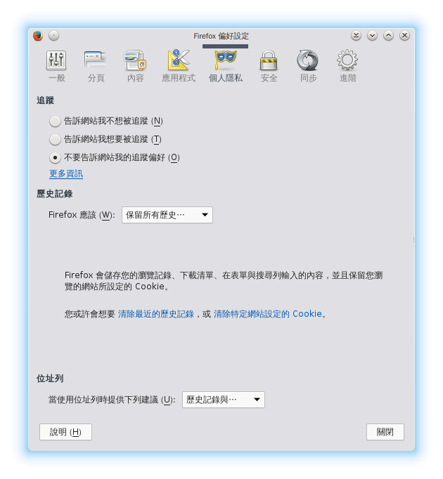在"編輯"→"偏好設定"→"個人隱私"那邊就能找到。
Chromium 設定不要追蹤我
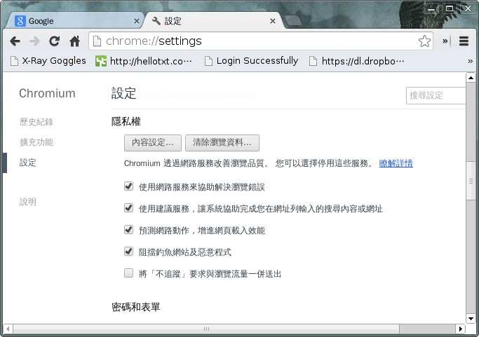在"自訂及控制"（工具列的選項紐）→"設定"→"顯示進階設定"那邊就能找到。
網頁背後的摘要
有人覺得搜尋優化
"完全"不用管
那看到這個呢......？
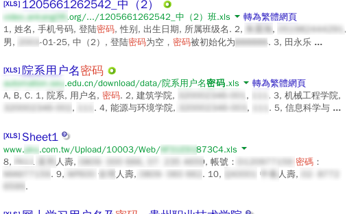我"只是"搜尋，完全沒用啥高深的技術......
不要讓搜尋引擎爬到啊......囧
寫Robots.txt來控制Google的檢索
網頁上的<meta>也是搜尋引擎檢索根據
相關教學
本投影片範例
<meta name="description" content="這是我架起一個個人網站所得到的經驗，就用這份投影片分享給大家吧！！">
<meta name="author" content="元兒～">
<meta name="keywords" content="架站經驗 架站">Facebook的摘文
<meta property="og:title" content="The Rock"/>
<meta property="og:type" content="movie"/>
<meta property="og:url" content="http://www.imdb.com/title/tt0117500/"/>
<meta property="og:image" content="http://ia.media-imdb.com/rock.jpg"/>
<meta property="og:site_name" content="IMDb"/>最後...很想告訴大家
這份投影片完全就是用網頁寫的！！
採用模板deck.js
- 一個
<section>包起來就是一張投影片 - http://imakewebthings.com/deck.js/
- 有空可以研究看看喔！！
網頁真的可以做很多事喔！！！
以上...呼...
希望有幫到大家！
我還是想大喊...
架站真的很好玩！
謝謝大家！！
 本投影片是採用創用CC BY-NC-SA 4.0授權
本投影片是採用創用CC BY-NC-SA 4.0授權
姓名標示-非商業性-相同方式分享
此投影片原始碼在Github上！！
/
#